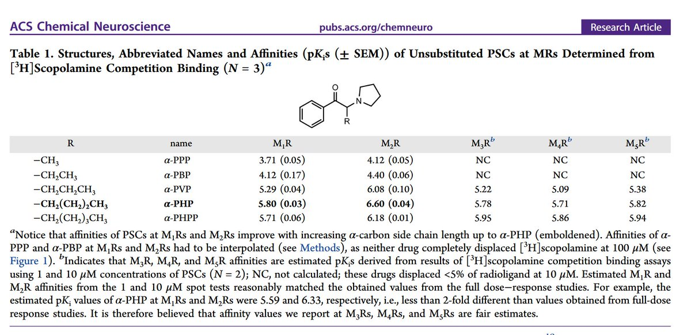
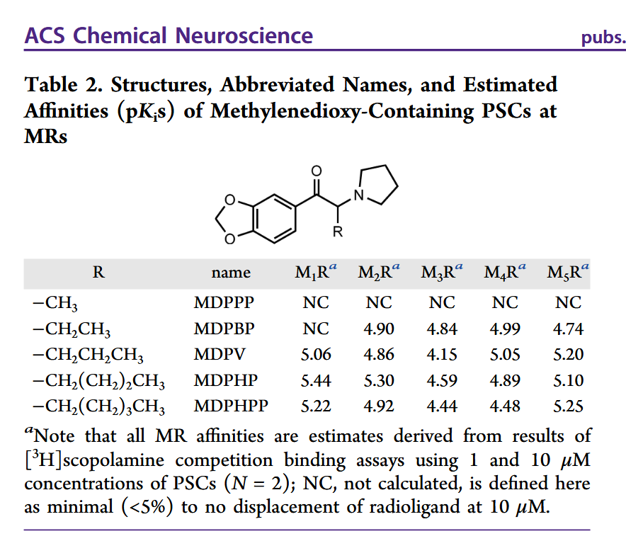
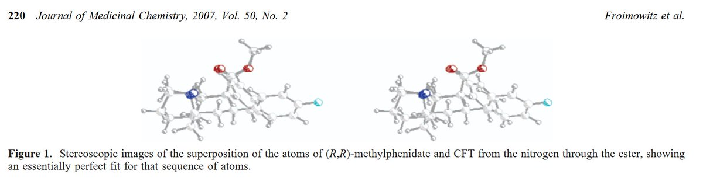

其他兴奋剂存在的问题：
苯基α-吡咯烷基酮类物质以及3,4-亚甲双氧基苯基α-吡咯烷基酮类(尤其是碳链较长的物质)是抗胆碱类药物，碳链越长，抗胆碱作用越大，它们的影响在娱乐剂量下影响就越显著，导致记忆损害、高血压等不良反应。
在另一个文献中，α-乙氨基苯基酮类物质有细胞毒性，此处不展开讲了。

苯基α-吡咯烷基酮类物质以及3,4-亚甲双氧基苯基α-吡咯烷基酮类(尤其是碳链较长的物质)是抗胆碱类药物，碳链越长，抗胆碱作用越大，它们的影响在娱乐剂量下影响就越显著，导致记忆损害、高血压等不良反应。
在另一个文献中，α-乙氨基苯基酮类物质有细胞毒性，此处不展开讲了。



药物使用的污名化问题，其实在圈内也存在，比如很多人认为哌甲酯类能益智，别的兴奋剂则不行🤔
后者可能确实存在一些问题，但在科学文献中，最常和哌甲酯相提并论的其实是可卡因，二者结构相似，与多巴胺转运体的结合也相似。但是相比可卡因，哌甲酯更纯(DA选择性高)、更持久(代谢慢)、更强效(IC50低) https://t.co/Iv2FWvshT3
后者可能确实存在一些问题，但在科学文献中，最常和哌甲酯相提并论的其实是可卡因，二者结构相似，与多巴胺转运体的结合也相似。但是相比可卡因，哌甲酯更纯(DA选择性高)、更持久(代谢慢)、更强效(IC50低) https://t.co/Iv2FWvshT3